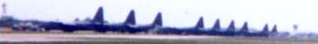

|
www.nomorewars.org
ventimila bambini
|
|
|
lowrez luca |
 |
|
|
|
|
aviano 03 06 999
La strada che si apriva tra i colli non lasciava margini per capire dove saremmo finiti. Erano oramai quasi le due e mezza, lieve ritardo. Per la strada solo la citroen di luca di paese in paese: eravamo congelati nell'attesa di poter incontrare pullman, bandiere e striscioni, colori e slogan.
Eccoci in una piazzetta, Polcenigo o forse Budoia, le prime anime vive. Alla
ns richiesta sulla direzione da prendere, l'indigeno ha sollevato lo sguardo
al cielo. Evidentemente la sua sosta al bar del paese lo ha precipitato in
un dimensione da casellante: "dritto di là, poi a sinistra e arrivi ad
Aviano". Le risate della sua compagna non ci lasciano dubbi: forse siamo gli
ultimi, ma non gli unici! Solo in quel momento ci siamo rilassati e la
premura di arrivare alla svelta s'è fatta sentire. Wow, passare davanti alla base USAF è stata un'impressione forte. Neri americani che ne uscivano in auto, militari e poliziotti, edifici e auto inconfodibilmente made in usa. Un'altra dimensione. Per la prima volta mi trovavo di fronte alla NATO, agli americani, al potere occidentale. E' strano passare dal piccolo centro storico, dalle piccole casette una appiccicata all'altra, al mondo del double language. Insomma abituato si all'italiano/tedesco, all'italiano/francese, ma trovarmi in una colonia americana proprio no!
Trovata finalmente la zona industriale, lo stupore ha presto lasciato strada
all'emozione di esserci, finalmente. Gruppetti di manifestanti erano in
marcia, passo lesto per raggiungere il corteo partito da qualche minuto.
Parcheggio, cellulari, acqua. Bottiglia da 1 e mezzo nella tasca dei jeans.
Eravamo in marcia! Primi sguardi sui ns compagni d'avventura, orecchie tese
a cogliere gli accenti. Tipica fauna da manifestazione, ci si mischia ben
volentieri!
Ok, kodakusaegetta in mano, bottiglia in tasca, occhiali da sole. Siamo pronti. Procediamo a passo spedito, vogliamo attraversare tutto il corteo e goderci la sua anima. I primi che incontriamo sono quelli di Socialismo Rivoluzionario, la gran setta della sinistra antagonista. Megafono ubriaco, qualcuno urla slogan da operetta e fa pensare entrambi ad un vecchio ubriacone con sacchetto di carta in mano. Ah, certe cose non si smentiscono... giovani che parlano come i loro nonni senza la minima idea di quello che sta dietro alla loro facile critica. Come altri a seguire, puntano la loro rabbia sulla missione Arcobaleno, su D'Alema, su polizia e carabinieri. Io e luca ci troviamo d'accordo nel constatare come sia facile, una volta individuato il nemico, perdere la traccia del proprio percorso. Non amiamo la lotta tra buoni e cattivi e non crediamo nel bianco o nel nero. Non ce la sentiamo di urlare contro la missione arcobaleno, questa non è politica, è rabbia urlata al vento! Pensiamo al rispetto che dobbiamo a chi è tutt'ora impegnato a porgere cibo a chi da qui si cerca di difendere urlando contro l'arcobaleno. Troppo facile.
Procediamo, superiamo SR, attraversiamo schegge colorite, striscioni ben
fatti, superiamo le donne davvero in nero e seguiamo per un po' un gruppo variegato
di manifestanti. Magliette e spille target, bandiere rosse, il Che. Ci
mancava.
Molti, moltissimi ragazzini. Alcuni con gli occhiali da sole, altri con il
fazzoletto sulla faccia. Alcuni con sguardo incarognito, altri persi nel
vuoto. E' raro che ti guardino negli occhi. Forse perché poi sarebbe troppo
difficile picchiare. Non posso non pensare a tutto questo quando per un lungo tratto di corteo l'unica vittima delle contestazioni è stata l'uniforme. Ma come! Ciechi! Non sono loro i ns nemici! Non fatevi abbagliare, fa parte del gioco! Alzate lo sguardo, sollevatevi l'un l'altro e guardate al di là della recinzione: una bandiera americana sventola sul tetto della base. E' li che si deve colpire!
D'istinto mi alzo sulle punte dei piedi e cerco di superare con lo
sguardo la recinzione. Cerco gli aerei. Niente.
Ok, qualche passo
avanti. Luca si mette a torso nudo... c'è un gran caldo. Io persisto con la
mia magliettina target... come togliersela? Sì, calma, calma. Un elicottero si avvicina velocemente. Accorre un gruppetto di giovani con scudi circolari imbottiti, fazzoletti, bastoni. La forza del disordine del corteo. Manaccia! Abbiamo visto certe facce! Alcuni manifestanti sembravano gli stessi poliziotti con altre uniformi. Ci siamo chiesti come andrebbe il mondo se al potere ci fossero loro. Rabbrividiamo e affrettiamo il passo: si sente nell'aria della musica. Fiati e percussioni, musica popolare, musica slava. E' quello che fa per noi! Quello è un segno di pace, la musica! In effetti è la parte del corteo più bella. Ballano in pochi, ma tutti sorridono, cantano, urlano e applaudono. Mancano solo gli slavi, maestri del ballo. E' una festa, è voglia di pace e di serenità. Qui tra loro si sta bene.
Eccoli! Gli aerei! Sulla destra, grazie al telone strappato, possiamo
intravvedere grigi mostri alati. Mi arrampico su di una staccionata
sostenuto da luca. Click! Chissà com'è venuta...
Arriviamo in piazza. E' la fine. Enormi insegne del solito ennesimo centro commerciale sovrastano sullo sfondo le bandiere rosse. Il colpo d'occhio è straniante. Ad Aviano è confluita l'italia della pace, orfana di riferimenti politici, lasciata sola. Sì, ventimila bambini alla ricerca di un punto di riferimento. Questo è il movimento antagonista in Italia. Bambini orfani di politica, di idee, di speranze. Orfana di centri sociali, di partiti, di combattenti. Manca un riferimento, una prospettiva, un sogno.
E' forse quell'enorme buco nero che ci troviamo davanti? E' forse il crollo
delle idelogie molto spesso confuse coi sogni? Sì, perché quei ventimila
bambini ad Aviano sono forse abbandonati a sé stessi, senza prospettive e
senso del proprio futuro, ma hanno dimostrato che non si arrendono, che ci
sono e continueranno ad esserci.
E' arrivato il momento della partenza.
Noi ci avviamo a piedi e ci rifacciamo il percorso al contrario. I celerini
hanno rotto le fila e guardano incuriositi il passare dei manifestanti sulla
via di casa. Molti avrebbero voluto essere assieme a noi, ne siamo certi. Dov'è il muro che sembrava separarci così di netto? |
|
|
TOP • HOME | |